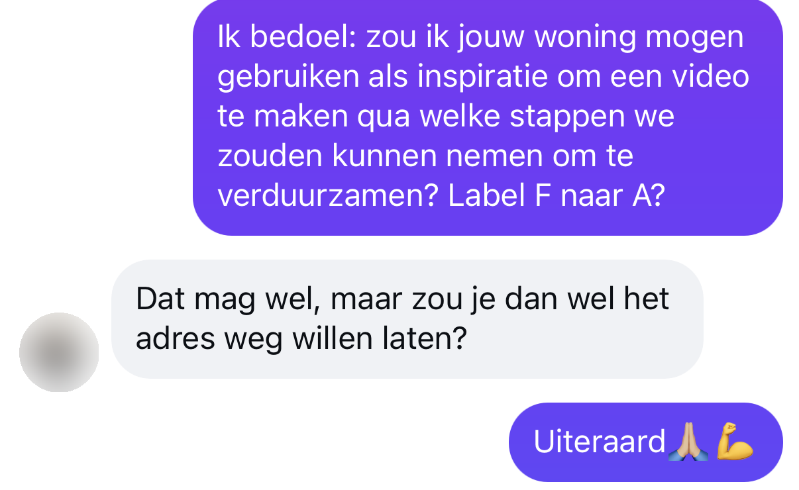
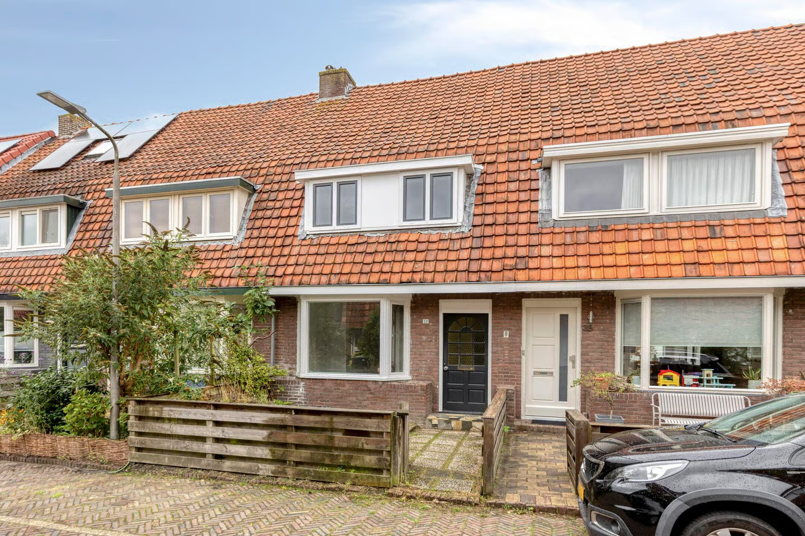

<!doctype html>
<!--
  Funda Fixer #6 — tussenwoning Leeuwarden, label F (versie A). Adres bewust weggelaten (wens van de kijker).
  Sardo-format (zie ../../SARDO_FORMAT.md). Gebaseerd op D12 (goedgekeurd Funda Fixer-format).
  Alleen het CONFIG-blok onderaan aanpassen.
-->
<html lang="nl" data-resolution="portrait">
  <head>
    <meta charset="UTF-8" />
    <meta name="viewport" content="width=1080, height=1920" />
    <script src="assets/vendor/gsap.min.js"></script>
    <link rel="stylesheet" href="assets/brand-tokens.css" />
    <style>
      * { margin: 0; padding: 0; box-sizing: border-box; }
      html, body { width: 1080px; height: 1920px; overflow: hidden; background: var(--brand-bg); }
      body { font-family: var(--font-display); color: var(--brand-text); }

      /* ZONE 1 — Peter. Wrapper full-frame; FACE_OFFSET zet de ogen op y≈534. */
      #face-wrapper { position: absolute; left: 0; top: 0; width: 1080px; height: 1920px; transform-origin: 540px 534px; }
      #face { position: absolute; inset: 0; width: 100%; height: 100%; object-fit: cover; }

      /* ANKERPUNT y=960 — hook-tekst en CTA */
      .anchor-text { position: absolute; left: 60px; right: 60px; top: 960px; transform: translateY(-50%);
        text-align: center; font-weight: 800; line-height: 1.05; letter-spacing: -0.01em;
        -webkit-text-stroke: 3px var(--caption-stroke); paint-order: stroke fill;
        text-shadow: 0 6px 24px rgba(0,0,0,0.55); opacity: 0; }
      #hook { font-size: 92px; }
      #hook .hl, #cta .big { color: var(--brand-accent); }
      #cta .small { display: block; font-size: 54px; font-weight: 700; margin-bottom: 6px; }
      #cta .big { display: block; font-size: 160px; }

      /* ZONE 2 — captions 970–1190 */
      #captions { position: absolute; left: 40px; right: 40px; top: 970px; height: 220px;
        display: flex; align-items: center; justify-content: center; }
      .chunk { position: absolute; width: 100%; text-align: center; font-size: 78px; white-space: nowrap; font-weight: 800;
        line-height: 1.1; -webkit-text-stroke: 3px var(--caption-stroke); paint-order: stroke fill;
        text-shadow: 0 4px 18px rgba(0,0,0,0.6); opacity: 0; }
      .w { display: inline-block; margin: 0 0.14em; }
      .w.on { color: var(--brand-accent); }

      /* ZONE 3 — beeld 1205–1905, x 0–918 */
      #beeld-bg { position: absolute; left: 0; top: 1190px; width: 1080px; height: 730px;
        background: var(--brand-bg); opacity: 0; }
      .beeld { position: absolute; left: 36px; top: 1225px; width: 846px; height: 560px; border-radius: 24px;
        background: var(--brand-surface); border: 2px solid var(--brand-border); padding: 40px;
        display: flex; flex-direction: column; justify-content: center; gap: 18px; opacity: 0; overflow: hidden; }
      .beeld img, .beeld video { position: absolute; inset: 0; width: 100%; height: 100%; object-fit: cover; }
      .beeld video.top { object-position: top; }
      .beeld .label { font-size: 34px; font-weight: 600; color: var(--brand-text-dim); text-transform: uppercase; letter-spacing: 0.06em; }
      .beeld .value { font-size: 96px; font-weight: 800; color: var(--brand-accent); line-height: 1; }
      .beeld .line { font-size: 60px; font-weight: 700; line-height: 1.15; }
      .beeld .tagbar { position: absolute; left: 0; right: 0; bottom: 0; padding: 22px 32px; background: rgba(25,25,30,0.88);
        font-size: 40px; font-weight: 700; }
      .beeld .tagbar .price { display: block; font-size: 64px; font-weight: 800; color: var(--brand-accent); line-height: 1.05; margin-bottom: 6px; }
      .beeld .tagbar .meta { display: block; font-size: 36px; font-weight: 600; color: var(--brand-text); }
      .beeld .value.big { font-size: 140px; }
      .beeld .of { font-size: 60px; color: var(--brand-text-dim); }
      .beeld .note { font-size: 28px; font-weight: 600; color: var(--brand-text-dim); }
      .beeld .dim { color: var(--brand-text-dim); } .beeld .acc { color: var(--brand-accent); }
      .beeld .sub { font-size: 44px; font-weight: 700; }
      .beeld .labels { display: flex; align-items: center; gap: 36px; }
      .beeld .lab { width: 150px; height: 150px; border-radius: 22px; display: flex; align-items: center; justify-content: center;
        font-size: 118px; font-weight: 800; color: var(--brand-bg); }
      .beeld .lab.g { background: var(--brand-accent); }
      .beeld .lab.a { background: var(--brand-warn); }
      .beeld .arr { font-size: 90px; font-weight: 800; color: var(--brand-text); }
      .beeld .value .note { font-size: 30px; margin-left: 14px; }
      .beeld .net { font-size: 46px; font-weight: 800; }
      .beeld .net b { color: var(--brand-accent); }

      /* Bonnetje (het plan met kosten) */
      .beeld.bon { top: 1210px; height: 600px; justify-content: flex-start; gap: 0; padding: 30px 40px 26px; }
      .bon .label { margin-bottom: 10px; }
      .bon .row { display: flex; justify-content: space-between; align-items: baseline; font-size: 34px; font-weight: 700; line-height: 1.34; }
      .bon .row .p { color: var(--brand-accent); font-weight: 800; white-space: nowrap; }
      .bon .row .n { white-space: nowrap; }
      .bon .tot { display: flex; justify-content: space-between; align-items: baseline; margin-top: 10px; padding-top: 12px;
        border-top: 2px dashed var(--brand-border); font-size: 40px; font-weight: 800; }
      .bon .tot .p { color: var(--brand-accent); font-size: 52px; }

      /* Serie-badge + chat-kaart (Funda Fixer #6) */
      .beeld .badge { position: absolute; left: 28px; top: 26px; z-index: 2; padding: 12px 24px; border-radius: 999px;
        background: var(--brand-accent); color: var(--brand-bg); font-size: 34px; font-weight: 800; letter-spacing: 0.02em; text-transform: uppercase; }
      .beeld.chat { top: 1210px; height: 610px; padding: 0; background: #fff; }
      .beeld.chat img { inset: 84px 0 0 0; height: auto; object-fit: contain; object-position: center bottom; background: #fff; }
      .beeld .tagbar .meta .acc { color: var(--brand-accent); }
      .bon .row .p { opacity: 0; }
      .bon .tot { opacity: 0; }
    </style>
  </head>
  <body>
    <div id="root" data-composition-id="main" data-start="0" data-duration="138.42" data-width="1080" data-height="1920">
      <div id="face-wrapper">
        <video id="face" src="assets/source.mp4" muted playsinline data-start="0" data-duration="138.42" data-track-index="0"></video>
      </div>
      <audio id="face-audio" src="assets/source.mp4" data-start="0" data-duration="138.42" data-track-index="9"></audio>

      <div id="beeld-bg" class="clip" data-start="0" data-duration="138.42" data-track-index="3"></div>
      <div id="beeld-layer" class="clip" data-start="0" data-duration="138.42" data-track-index="4"></div>
      <!-- Calculator-opname (hergebruikt uit D07, nepgegevens, vertraagd naar 7,6 s). Wrapper is bewust niet getimed. -->
      <div class="beeld" id="calc-card"><video id="calc-vid" class="top" src="assets/calc-slow.mp4" muted playsinline data-start="12.74" data-duration="7.6" data-track-index="1"></video></div>
      <div id="captions" class="clip" data-start="0" data-duration="138.42" data-track-index="5"></div>
      <div id="hook" class="anchor-text clip" data-start="0" data-duration="138.42" data-track-index="6"></div>
      <div id="cta" class="anchor-text clip" data-start="0" data-duration="138.42" data-track-index="7"></div>
    </div>

    <script>
      /* ======================= CONFIG — alleen dit aanpassen ======================= */
      const CONFIG = {
        duration: 138.42,
        faceOffsetY: -322, faceOffsetX: -105, faceScale: 1.08,  // ogen op y≈534 (bron: ogen op ~860, gezicht x≈640)
        hook: { text: 'Label <span class="hl">F</span> naar <span class="hl">A</span><br>voor een kijker', end: 2.75 },
        cta:  { word: "CHECK", start: 135.9 },
        words: [["Een", 0.24, 0.48], ["kijker", 0.48, 0.88], ["van", 0.88, 1.04], ["die", 1.04, 1.2], ["vorige", 1.2, 1.52], ["video's,", 1.52, 1.92], ["die", 1.92, 2.08], ["kocht", 2.08, 2.32], ["dit", 2.4, 2.56], ["huis.", 2.56, 2.8], ["En", 2.8, 2.88], ["die", 2.88, 3.04], ["vroeg", 3.04, 3.28], ["aan", 3.36, 3.48], ["mij", 3.48, 3.6], ["of", 3.6, 3.76], ["ik", 3.76, 3.84], ["wilde", 3.84, 4.08], ["gaan", 4.08, 4.24], ["kijken", 4.24, 4.4], ["hoe", 4.4, 4.48], ["ik", 4.48, 4.64], ["er", 4.64, 4.72], ["label", 4.72, 5.04], ["A", 5.04, 5.2], ["van", 5.2, 5.44], ["kan", 5.44, 5.6], ["maken.", 5.6, 6.08], ["Het", 6.24, 6.4], ["is", 6.4, 6.56], ["een", 6.56, 6.72], ["tussenwoning", 6.72, 7.44], ["uit", 7.44, 7.6], ["1933.", 7.6, 8.56], ["Het", 8.64, 8.8], ["is", 8.8, 8.96], ["89", 8.96, 9.6], ["vierkante", 9.6, 10.24], ["meter", 10.24, 10.48], ["en", 10.56, 10.64], ["het", 10.64, 10.72], ["zit", 10.72, 10.88], ["op", 10.88, 11.04], ["label", 11.04, 11.52], ["F.", 11.52, 12.16], ["We", 12.72, 12.88], ["gaan", 12.88, 13.12], ["hem", 13.12, 13.28], ["eerst", 13.28, 13.52], ["even", 13.52, 13.68], ["door", 13.68, 13.84], ["de", 13.84, 13.92], ["calculator", 13.92, 14.4], ["heen", 14.4, 14.48], ["gooien", 14.56, 14.88], ["om", 14.96, 15.12], ["te", 15.12, 15.2], ["kijken", 15.2, 15.44], ["wat", 15.44, 15.6], ["de", 15.6, 15.68], ["geschatte", 15.68, 16.08], ["maandelijkse", 16.16, 16.72], ["kosten", 16.72, 16.96], ["zijn", 17.12, 17.44], ["en", 17.52, 17.68], ["wat", 17.68, 17.92], ["de", 17.92, 18.08], ["potentie", 18.08, 18.56], ["is", 18.56, 18.72], ["wat", 18.72, 18.88], ["in", 18.88, 18.96], ["deze", 18.96, 19.2], ["woning", 19.2, 19.6], ["zit.", 19.6, 20.32], ["Oké,", 20.48, 20.88], ["wat", 20.88, 20.96], ["wij", 21.04, 21.28], ["zouden", 21.28, 21.52], ["gaan", 21.6, 21.92], ["doen", 21.92, 22.8], ["is", 22.8, 23.12], ["beginnen", 23.2, 23.68], ["met", 23.68, 23.76], ["isoleren.", 23.84, 24.32], ["Het", 24.32, 24.48], ["is", 24.48, 24.56], ["label", 24.56, 24.96], ["F.", 24.96, 25.52], ["Het", 25.68, 25.84], ["is", 25.84, 26], ["een", 26, 26.08], ["jaren", 26.08, 26.48], ["30", 26.48, 26.8], ["woning.", 26.8, 27.2], ["Dus", 27.2, 27.52], ["ik", 27.52, 27.68], ["ga", 27.68, 27.84], ["er", 28, 28.08], ["vanuit", 28.08, 28.4], ["dat", 28.4, 28.56], ["er", 28.56, 28.72], ["wel", 28.8, 28.96], ["een", 28.96, 29.04], ["spouw", 29.04, 29.36], ["in", 29.36, 29.52], ["zit", 29.52, 29.6], ["die", 29.68, 29.84], ["geïsoleerd", 29.84, 30.48], ["kan", 30.48, 30.72], ["worden.", 30.72, 31.28], ["Dus", 31.28, 31.6], ["dan", 31.6, 31.76], ["begin", 31.76, 32.08], ["je", 32.08, 32.24], ["daarmee.", 32.24, 32.72], ["Gaat", 32.72, 32.96], ["dat", 32.96, 33.12], ["niet,", 33.12, 33.36], ["dan", 33.36, 33.52], ["moet", 33.52, 33.68], ["je", 33.68, 33.76], ["eigenlijk", 33.76, 34.08], ["van", 34.08, 34.24], ["binnenuit", 34.24, 34.72], ["isoleren.", 34.72, 35.68], ["Door", 35.68, 35.92], ["middel", 35.92, 36.08], ["van", 36.16, 36.32], ["bijvoorbeeld", 36.32, 36.56], ["voorzetwanden.", 36.64, 38], ["Vervolgens", 38.16, 38.96], ["ga", 38.96, 39.12], ["je", 39.12, 39.28], ["het", 39.28, 39.36], ["dak", 39.36, 39.52], ["isoleren.", 39.68, 40.24], ["Dat", 40.24, 40.4], ["kan", 40.4, 40.56], ["gewoon", 40.56, 40.8], ["binnenuit.", 40.8, 41.28], ["Dat", 41.28, 41.52], ["hoeft", 41.52, 41.76], ["niet", 41.76, 41.92], ["een", 41.92, 42], ["heel", 42, 42.16], ["nieuw", 42.16, 42.32], ["dak", 42.4, 42.56], ["op", 42.64, 42.8], ["te", 42.8, 42.96], ["komen.", 42.96, 43.36], ["De", 43.52, 43.68], ["vloer", 43.68, 44.08], ["isoleren", 44.08, 44.56], ["zou", 44.72, 44.88], ["ik", 44.88, 45.04], ["gaan", 45.04, 45.2], ["doen,", 45.2, 45.6], ["omdat", 45.6, 45.92], ["je", 45.92, 46.16], ["er", 46.16, 46.32], ["natuurlijk", 46.32, 46.56], ["een", 46.56, 46.64], ["kruibruimte", 46.64, 47.36], ["onder", 47.36, 47.52], ["de", 47.52, 47.6], ["woning", 47.6, 47.92], ["hebt.", 47.92, 48.16], ["Dus", 48.16, 48.4], ["dan", 48.4, 48.48], ["kan", 48.48, 48.64], ["je", 48.64, 48.72], ["daar", 48.72, 48.88], ["makkelijk", 48.88, 49.12], ["de", 49.12, 49.2], ["vloer", 49.2, 49.6], ["gaan", 49.6, 49.76], ["isoleren.", 49.76, 50.72], ["Daarna", 51.04, 51.52], ["moet", 51.52, 51.68], ["je", 51.68, 51.84], ["zo", 51.84, 52], ["snel", 52, 52.32], ["mogelijk", 52.32, 52.64], ["gaan", 52.64, 52.8], ["kijken.", 52.8, 53.04], ["Oké,", 53.12, 53.36], ["hoe", 53.36, 53.52], ["kan", 53.52, 53.6], ["ik", 53.6, 53.76], ["HR++", 53.76, 54.56], ["glas", 54.64, 54.8], ["in", 55.04, 55.2], ["alle", 55.2, 55.44], ["nieuwe", 55.44, 56.08], ["ramen", 56.08, 56.72], ["krijgen.", 56.8, 57.6], ["Dus", 57.6, 57.84], ["als", 57.84, 58.08], ["je", 58.08, 58.24], ["alleen", 58.4, 58.64], ["het", 58.64, 58.8], ["glas", 58.8, 59.12], ["zou", 59.12, 59.36], ["kunnen", 59.36, 59.52], ["vervangen,", 59.52, 60.08], ["dan", 60.08, 60.24], ["doe", 60.24, 60.48], ["dat.", 60.48, 61.04], ["Omdat", 61.55, 61.87], ["je", 61.87, 62.03], ["woning", 62.03, 62.35], ["nou", 62.35, 62.43], ["helemaal", 62.43, 62.75], ["zo", 62.75, 62.91], ["goed", 62.91, 63.07], ["geïsoleerd", 63.07, 63.63], ["is,", 63.63, 63.87], ["zul", 63.87, 64.03], ["je", 64.03, 64.19], ["ook", 64.19, 64.35], ["nog", 64.35, 64.51], ["ventilatie", 64.51, 65.23], ["moeten", 65.23, 65.47], ["aanbrengen.", 65.47, 66.11], ["Als", 66.27, 66.43], ["je", 66.43, 66.59], ["de", 66.59, 66.67], ["hele", 66.67, 66.91], ["woning", 66.91, 67.23], ["gaat", 67.23, 67.39], ["renoveren,", 67.39, 68.03], ["ga", 68.03, 68.11], ["dan", 68.19, 68.35], ["meteen", 68.35, 68.67], ["kijken", 68.67, 68.91], ["naar", 68.91, 69.07], ["een", 69.07, 69.15], ["warmteterugwinsysteem.", 69.15, 70.67], ["Dus", 70.67, 70.99], ["ventilatie", 70.99, 71.6], ["type", 71.6, 72.11], ["D.", 72.19, 72.75], ["Zodat", 72.75, 73.23], ["de", 73.23, 73.31], ["warmte", 73.31, 73.87], ["ook", 73.87, 74.03], ["in", 74.03, 74.19], ["huis", 74.19, 74.51], ["kan", 74.51, 74.67], ["blijven", 74.67, 74.99], ["houden.", 74.99, 75.55], ["Zo", 75.55, 75.87], ["niet,", 75.87, 76.19], ["kijk", 76.19, 76.43], ["dan", 76.43, 76.59], ["naar", 76.59, 76.75], ["ventilatie", 76.75, 77.23], ["type", 77.31, 77.63], ["C.", 77.63, 78.27], ["Dus", 78.27, 78.51], ["ik", 78.51, 78.67], ["ga", 78.67, 78.91], ["hier", 78.91, 79.07], ["even", 79.07, 79.39], ["uit", 79.39, 79.71], ["van", 79.71, 79.87], ["een", 79.87, 80.03], ["hybride", 80.03, 80.67], ["warmtepomp", 80.67, 81.39], ["die", 81.39, 81.55], ["je", 81.55, 81.63], ["kan", 81.63, 81.87], ["plaatsen.", 81.87, 82.67], ["Als", 82.67, 82.91], ["de", 82.91, 83.07], ["ketel", 83.07, 83.47], ["nog", 83.47, 83.63], ["goed", 83.63, 83.79], ["is.", 83.79, 84.03], ["En", 84.03, 84.11], ["anders", 84.11, 84.43], ["moet", 84.43, 84.59], ["je", 84.59, 84.75], ["gewoon", 84.75, 84.99], ["door", 84.99, 85.23], ["naar", 85.23, 85.39], ["een", 85.39, 85.47], ["all-electric.", 85.47, 86.91], ["En", 87.23, 87.55], ["plaats", 87.55, 87.87], ["daarnaast", 88.11, 88.59], ["nog", 88.59, 88.75], ["een", 88.75, 88.83], ["6", 88.83, 89.07], ["tot", 89.07, 89.23], ["8", 89.23, 89.47], ["zonnepanelen", 89.47, 90.35], ["in", 90.35, 90.43], ["combinatie", 90.59, 91.15], ["met", 91.15, 91.23], ["een", 91.23, 91.39], ["5", 91.39, 91.71], ["tot", 91.71, 91.87], ["10", 91.87, 92.11], ["kW", 92.11, 92.35], ["batterij.", 92.83, 93.95], ["Dit", 94.27, 94.59], ["alles", 94.59, 94.91], ["in", 94.91, 95.07], ["totaal", 95.07, 95.47], ["kost", 95.47, 95.79], ["ongeveer", 95.87, 96.27], ["€36.500", 96.27, 98.59], ["Maar", 98.83, 99.07], ["daar", 99.07, 99.23], ["krijg", 99.23, 99.47], ["je", 99.47, 99.63], ["nog", 99.63, 99.79], ["wel", 99.79, 99.95], ["€3.000", 99.95, 100.19], ["tot", 100.19, 100.35], ["€5.000", 100.35, 101.23], ["subsidie", 101.39, 102.11], ["van", 102.11, 102.35], ["terug.", 102.35, 103.23], ["Met", 103.47, 103.71], ["deze", 103.71, 104.03], ["verduurzamingsmaatregelen", 104.03, 105.63], ["kan", 105.63, 105.71], ["je", 105.71, 105.87], ["jouw", 105.87, 106.03], ["maandkosten", 106.03, 106.51], ["terugbrengen", 106.67, 107.07], ["van", 107.07, 107.23], ["€250", 107.23, 108.43], ["naar", 108.43, 108.67], ["€90", 108.67, 109.39], ["per", 109.39, 109.55], ["maand.", 109.55, 109.95], ["Betekent", 109.95, 110.27], ["dat", 110.35, 110.51], ["je", 110.51, 110.59], ["maandelijkse", 110.67, 111.15], ["besparing", 111.15, 111.55], ["van", 111.55, 111.71], ["€160", 111.71, 112.67], ["hebt.", 112.67, 112.99], ["Fixscore", 113.31, 114.19], ["is", 114.19, 114.35], ["6", 114.35, 114.51], ["van", 114.51, 114.67], ["de", 114.67, 114.75], ["10.", 114.75, 114.99], ["Helemaal", 115.07, 115.31], ["als", 115.39, 115.55], ["je", 115.55, 115.63], ["het", 115.63, 115.79], ["gaat", 115.79, 115.95], ["renoveren", 115.95, 116.35], ["en", 116.51, 116.59], ["toch", 116.59, 116.75], ["wel", 116.75, 116.91], ["alles", 116.91, 117.15], ["openhaalt.", 117.15, 117.87], ["Ik", 117.87, 117.95], ["denk", 117.95, 118.03], ["dat", 118.11, 118.19], ["het", 118.27, 118.43], ["heel", 118.43, 118.59], ["erg", 118.59, 118.75], ["goed", 118.75, 118.91], ["te", 118.91, 119.07], ["doen", 119.07, 119.31], ["is", 119.31, 119.47], ["en", 119.47, 119.63], ["het", 119.63, 119.87], ["een", 119.87, 120.19], ["mooi", 120.27, 120.59], ["project", 120.59, 121.23], ["zijn.", 121.23, 121.87], ["Helemaal", 122.19, 122.75], ["als", 122.75, 122.91], ["het", 122.91, 122.99], ["nu", 122.99, 123.15], ["al", 123.15, 123.31], ["een", 123.31, 123.39], ["opknapper", 123.39, 124.03], ["is,", 124.03, 124.19], ["dan", 124.19, 124.27], ["kan", 124.27, 124.43], ["je", 124.43, 124.51], ["het", 124.51, 124.59], ["gewoon", 124.59, 124.83], ["in", 124.83, 124.99], ["één", 124.99, 125.15], ["keer", 125.15, 125.39], ["goed", 125.39, 125.63], ["doen.", 125.63, 126.27], ["Deze", 126.5, 126.98], ["kijkers", 126.98, 127.38], ["sturen", 127.38, 127.54], ["ze", 127.7, 127.78], ["huis", 127.78, 128.02], ["in,", 128.02, 128.18], ["maar", 128.18, 128.34], ["dat", 128.34, 128.42], ["kan", 128.42, 128.58], ["jij", 128.58, 128.74], ["natuurlijk", 128.74, 129.14], ["ook", 129.14, 129.38], ["doen.", 129.38, 130.02], ["Stuur", 130.02, 130.5], ["mij", 130.5, 130.66], ["even", 130.66, 130.9], ["een", 130.9, 131.06], ["DM", 131.06, 131.46], ["met", 131.46, 131.62], ["jouw", 131.62, 131.86], ["Funda-link,", 131.86, 132.42], ["dan", 132.5, 132.66], ["kan", 132.66, 132.74], ["ik", 132.74, 132.82], ["dit", 132.82, 132.98], ["voor", 132.98, 133.14], ["jou", 133.14, 133.38], ["maken.", 133.38, 133.94], ["Of", 133.94, 134.26], ["reageer", 134.26, 134.82], ["onder", 134.82, 135.06], ["dit", 135.06, 135.22], ["berichtje", 135.22, 135.7], ["gewoon", 135.7, 135.86], ["CHECK", 135.94, 136.26], ["en", 136.26, 136.34], ["dan", 136.34, 136.42], ["zal", 136.42, 136.58], ["ik", 136.58, 136.66], ["jou", 136.66, 136.9], ["even", 136.9, 137.06], ["een", 137.06, 137.14], ["DM", 137.14, 137.54], ["sturen.", 137.54, 138.42]],
        chunkSize: 3,
        beelden: [
          // 1 Hook: de DM van de kijker (geblurd, zonder naam) + serie-badge
          { start: 0.3, end: 6.15, cls: "chat", html: '<div class="badge">Funda Fixer #6</div>', pop: [] },
          // 2 Het huis: foto + prijs, geen adres (wens kijker)
          { start: 6.2, end: 12.70, html: '<div class="badge">Funda Fixer #6</div><div class="tagbar"><span class="price">€ 225.000</span><span class="meta">Tussenwoning · Leeuwarden · 1933 · 89 m²<br><span class="acc">Energielabel F</span></span></div>', pop: [] },
          // 3 Calculator (video-in-video)
          { start: 12.74, end: 20.34, el: "#calc-card", pop: [] },
          // 4 Het plan — regels verschijnen als Peter ze noemt, prijzen pas bij "€36.500"
          { start: 20.4, end: 98.7, cls: "bon", html:
              '<div class="label">Het plan</div>' +
              '<div class="row r1"><span class="n">Spouwmuur isoleren</span><span class="p">€2.000</span></div>' +
              '<div class="row r2"><span class="n">Dak isoleren</span><span class="p">€5.000</span></div>' +
              '<div class="row r3"><span class="n">Vloer isoleren</span><span class="p">€1.500</span></div>' +
              '<div class="row r4"><span class="n">HR++ glas</span><span class="p">€5.500</span></div>' +
              '<div class="row r5"><span class="n">Ventilatie</span><span class="p">€3.000</span></div>' +
              '<div class="row r6"><span class="n">Hybride warmtepomp</span><span class="p">€10.500</span></div>' +
              '<div class="row r7"><span class="n">6–8 zonnepanelen</span><span class="p">€3.500</span></div>' +
              '<div class="row r8"><span class="n">Batterij 5–10 kWh</span><span class="p">€5.500</span></div>' +
              '<div class="tot"><span>Totaal</span><span class="p">± €36.500</span></div>',
            pop: [[".r1",29.04],[".r2",39.36],[".r3",43.68],[".r4",54.56],[".r5",64.51],[".r6",80.67],[".r7",89.47],[".r8",92.83],[".row .p",96.27],[".tot",96.6]] },
          // 5 Subsidie + netto
          { start: 98.8, end: 103.2, html: '<div class="label">Kosten</div><div class="value">± €36.500</div><div class="sub s1">− €3.000 à €5.000 subsidie</div><div class="net s2">Netto: <b>± €31.500 – €33.500</b></div><div class="note s1">Schatting. Check subsidie op rvo.nl</div>', pop: [[".s1",99.95],[".s2",102.1]] },
          // 6 Energie per maand
          { start: 103.4, end: 113.0, html: '<div class="label">Energie per maand</div><div class="line">Nu: <b class="dim">± €250</b></div><div class="line m2">Straks: <b class="acc">± €90</b></div><div class="line m3">Je bespaart <b class="acc">€160</b> per maand</div>', pop: [[".m2",108.67],[".m3",111.71]] },
          // 7 Fixscore
          { start: 113.2, end: 126.3, html: '<div class="label">Fixscore <span style="text-transform:none;letter-spacing:0">· hoger = makkelijker</span></div><div class="value">6<span class="of">/10</span></div><div class="line f1">✓ Renoveren? Dan alles in één keer</div><div class="line f2">✓ Opknapper: in één keer goed</div>', pop: [[".f1",115.07],[".f2",122.19]] },
        ],
        punchIns: [ [2.8, 1.12], [6.2, 1.0], [12.74, 1.14], [20.4, 1.0], [25.68, 1.12], [31.28, 1.0], [38.16, 1.12], [43.52, 1.0], [51.04, 1.14], [57.6, 1.0], [61.55, 1.12], [66.27, 1.0], [72.75, 1.12], [78.27, 1.0], [82.67, 1.12], [87.23, 1.0], [94.27, 1.14], [98.8, 1.0], [103.4, 1.14], [109.95, 1.0], [113.2, 1.14], [117.87, 1.0], [122.19, 1.12], [126.5, 1.0], [130.0, 1.1], [135.9, 1.16] ],
      };
      /* ============================================================================ */


      const tl = gsap.timeline({ paused: true });
      const $ = (s) => document.querySelector(s);

      // Face-positie
      gsap.set("#face-wrapper", { x: CONFIG.faceOffsetX, y: CONFIG.faceOffsetY, scale: CONFIG.faceScale });
      CONFIG.punchIns.forEach(([t, s]) => tl.set("#face-wrapper", { scale: CONFIG.faceScale * s }, t));

      // Hook op ankerpunt
      $("#hook").innerHTML = CONFIG.hook.text;
      tl.fromTo("#hook", { opacity: 0, scale: 0.92 }, { opacity: 1, scale: 1, duration: 0.18, ease: "back.out(1.6)" }, 0.02);
      tl.to("#hook", { opacity: 0, duration: 0.12, ease: "power2.in" }, CONFIG.hook.end);

      // Captions (na de hook-tekst, tot de CTA)
      const cap = $("#captions");
      const words = CONFIG.words.filter(([, s]) => s >= CONFIG.hook.end - 0.05 && s < CONFIG.cta.start - 0.05);
      const chunks = []; let cur = [];
      words.forEach((wd) => {
        const len = cur.map(([t]) => t).join(" ").length + (cur.length ? 1 : 0) + wd[0].length;
        const prevEnds = cur.length && /[.?!,]$/.test(cur[cur.length - 1][0]);
        if (cur.length && (cur.length >= CONFIG.chunkSize || len > 18 || prevEnds)) { chunks.push(cur); cur = []; }
        cur.push(wd);
      });
      if (cur.length) chunks.push(cur);
      chunks.forEach((group, i) => {
        const el = document.createElement("div");
        el.className = "chunk";
        el.innerHTML = group.map(([w]) => `<span class="w">${w}</span>`).join("");
        const chars = group.map(([w]) => w).join(" ").length;
        if (chars > 17) el.style.fontSize = Math.max(48, Math.floor(78 * 17 / chars)) + "px";
        cap.appendChild(el);
        const start = group[0][1];
        const end = chunks[i + 1] ? chunks[i + 1][0][1] : Math.min(group[group.length - 1][2] + 0.3, CONFIG.cta.start);
        tl.set(el, { opacity: 1 }, start);
        tl.set(el, { opacity: 0 }, Math.min(end, CONFIG.cta.start));
        group.forEach(([, s, e], j) => {
          const span = el.children[j];
          tl.set(span, { className: "w on" }, s);
          tl.set(span, { className: "w" }, e);
        });
      });

      // Beeld-zone
      const layer = $("#beeld-layer");
      CONFIG.beelden.forEach((b, i) => {
        let el;
        if (b.el) el = $(b.el);
        else {
          el = document.createElement("div");
          el.className = "beeld" + (b.cls ? " " + b.cls : "");
          el.innerHTML = b.html;
          layer.appendChild(el);
        }
        (b.pop||[]).forEach(([sel,t]) => el.querySelectorAll(sel).forEach((n) => tl.fromTo(n, { opacity: 0, x: -30 }, { opacity: 1, x: 0, duration: 0.25, ease: "expo.out" }, t)));
        tl.set("#beeld-bg", { opacity: 1 }, b.start);
        tl.fromTo(el, { opacity: 0, y: 60 }, { opacity: 1, y: 0, duration: 0.3, ease: "expo.out" }, b.start);
        tl.to(el, { opacity: 0, duration: 0.15, ease: "power2.in" }, b.end - 0.15);
        const next = CONFIG.beelden[i + 1];
        if (!next || next.start > b.end + 0.05) tl.set("#beeld-bg", { opacity: 0 }, b.end);
      });

      // CTA
      $("#cta").innerHTML = `<span class="small">Reageer</span><span class="big">${CONFIG.cta.word}</span>`;
      tl.fromTo("#cta", { opacity: 0, scale: 0.85 }, { opacity: 1, scale: 1, duration: 0.25, ease: "back.out(1.8)" }, CONFIG.cta.start);

      tl.set({}, {}, CONFIG.duration);
      window.__timelines = window.__timelines || {};
      window.__timelines["main"] = tl;
    </script>
  </body>
</html>
